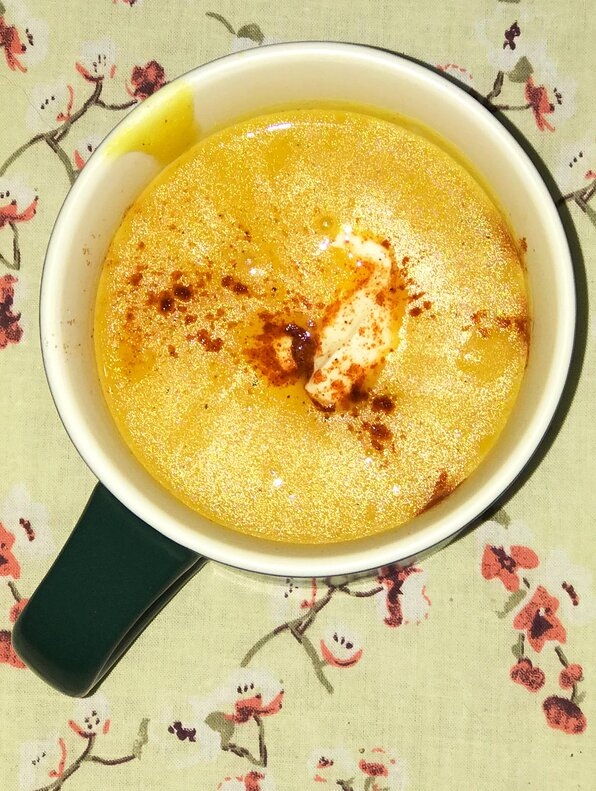

Harvest Pumpkin Soup

Description
A very easy and great tasting soup.
Ingredients
- 2 small sugar pumpkin
- 3 cups chicken stock
- ¾ cup heavy whipping cream
- ¼ teaspoon ground nutmeg
- ½ teaspoon ground sage
- 1 ½ teaspoons salt
- 4 tablespoons sour cream
Steps
-
Preheat oven to 400 degrees F (205 degrees C). Cut pumpkins in half and
scoop out seeds. Spray a cookie sheet with non-stick cooking spray.
Place pumpkins, flesh side down on the cookie sheet and roast until soft
to the touch, about 45 minutes. Remove pumpkins from oven and let cool.
Once pumpkins are cool scrape flesh from skins into a food processor.
Discard skins.
-
Add chicken stock to the pumpkin and puree. Pour soup into a large
saucepan and bring to a simmer over medium heat. Stir in cream, nutmeg,
sage and salt. Mix well and remove from heat. Serve garnished with a
dollop of sour cream